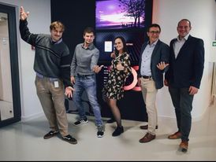
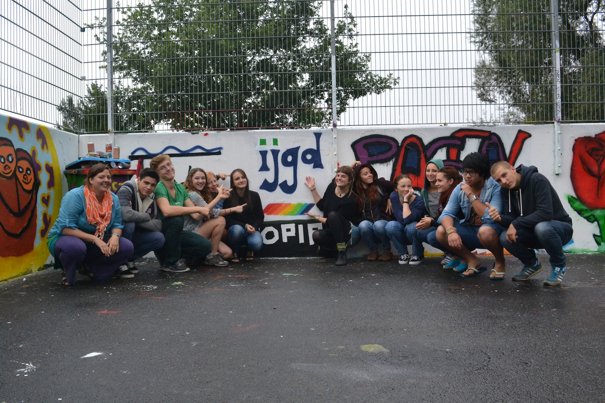
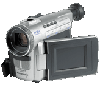

Hey there! My name is Aleksandar Tendjer, and I'm excited to share a bit about myself with you. Let’s start this journey together, shall we?
I am a Backend Node.js developer currently working at Endava in Slovenia. In my role, I'm knee-deep in developing a
captivating E-commerce project. But that's not all; I've also worn the hat of a .NET support dev, contributing to
internal SAS projects, where we harnessed the power of GPT to generate SWAT analyses and project proposals. Our project
was even recognized as the most innovative project corporation-wide. It's been an incredible experience, and I'm
constantly driven by my passion for coding and creating meaningful solutions.
-
My team at Endava HQ in Berlin, November 2022.
-
Ijgd Jugendkulturfabrik youth camp 2013. I'm the first on the right side.
Currently, besides my work I'm pursuing a Master's degree in Computer Science, imersing into the current tech ternds and problems. My masters thesis project is in the field of GeoSpatial dataprocessing. My idea is to use Sentinel satellite data and harnessing the power of machine learning for creating better harvests in agriculture. The prospect of combining my passion for technology with environmental impact is incredibly exciting, and I can't wait to see how this project unfolds.
Beyond my academic pursuits and professional work, I'm an quite sporty. I love swimming, cycling, and running - the perfect trifecta of physical activities that keep me motivated and energized ! As an avid cyclist, my ultimate dream is to embark on a thrilling Euro cycling tour, weaving through picturesque landscapes, conquering challenging terrains, and relishing the euphoria of adventure on two wheels.
But hey, I'm not only about work and sports, I also have a few creative hobbies up my sleeve. I have a deep passion for filming and vintage camcorders, which you
can explore on my YouTube
channel.
It's still amateur but this is where I let my creative juices flow, capturing moments and telling
stories with as less words as possible.
And when, usually when the day winds down, I sometimes create music, specifically breakcore. When I was little I used to play video games on my Sony PS 1 and Sega Genesis and I remeber how I enjoyed listening to old Drum and bass when I played it.
Creating breakcore makes me go back a bit, vibe in the moment and put my emotions into notes . (:


So that's a snapshot of my story so far. Curious to know more or just want to chat? Reach out, and let’s
keep the
conversation rolling!